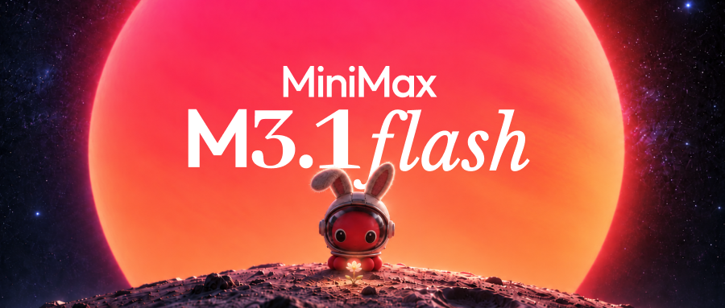

今天的共同主题是 可控性：AI 要能被约束，行车信息要能被稳定看见，平台规则要让用户知道后果。界面越智能，越要把边界、状态和补救方式设计清楚。
BISCAY / DAILY BRIEF / 10.20
今日晨报
科技、设计工具、AI、单机游戏与国产新能源。今天看一件事：能力变强之后，体验如何保持清楚、可控。

今天的 AI 消息不只比模型分数，更比执行成本、旧系统适配和安全治理。设计工具正式新品不多，但“设计、代码、文档共用上下文”仍是明确方向。游戏端有可立即体验的试玩版，也有玩家对新品发现效率的抱怨；车端则同时在补强关键信息显示与补能流程。